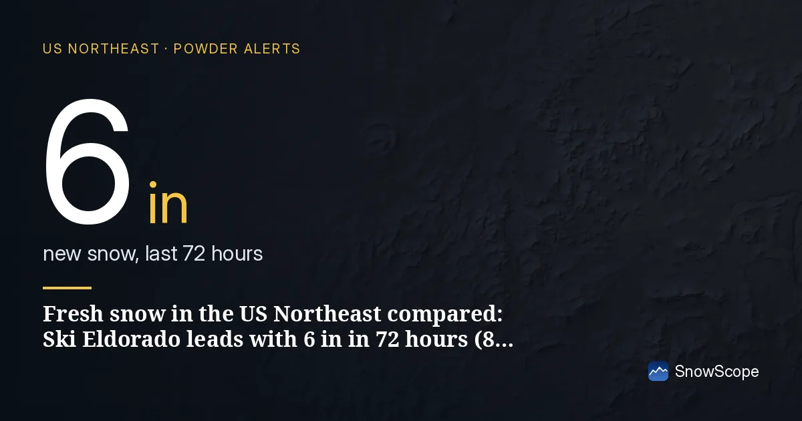

Fresh snow in the US Northeast compared: Ski Eldorado leads with 6 in in 72 hours (8 November)
A quick snow pulse brought white cover to 788 sq mi (2,040 km²) of the US Northeast by Sunday 8 November, jumping from bare ground two days earlier. Ski Eldorado, the region's leader, picked up 6 in (16 cm) of new snow in the last three days, with 6 in (16 cm) falling in just the past 24 hours.
See the live snow forecast for Ski Eldorado in the SnowScope appSnow depth, powder alerts and the 3D map, free.
Where the snow fell
Five resorts across the 111 in the region now report snow on their upper slopes. The storm was narrow and fast: it added 788 sq mi (2,040 km²) of snow cover in 72 hours, but forecasts show that total shrinking to 104 sq mi (270 km²) by 11 November as the air warms.
Ski Eldorado sits at the heart of this snow band. The resort's upper slopes hold 3 in (8 cm) this morning, built up almost entirely from yesterday's fresh snow.
| Resort | Snow depth | New snow, 72 h | Coming, next days | Top |
|---|---|---|---|---|
| Ski Eldorado | 3 in (8 cm) | 6 in (16 cm) | 2 in (4 cm) | 2,615 ft (797 m) |

Height makes the difference
At Ski Eldorado, elevation tells the story. The summit at 2,615 ft (797 m) has 2 in (4 cm) of snow; drop to 2,408 ft (734 m) and you find 2 in (4 cm); drop further to the base at 2,201 ft (671 m) and cover thins to 1 in (3 cm). Early-season snow often stays better high because freezing levels sit lower there.
Watch the forecast for 10 November: the freezing level at Ski Eldorado is forecast to climb to between 1,608 ft (490 m) and 3,970 ft (1,210 m). That tops out above the highest lift at 2,615 ft (797 m), meaning rain or wet snow on every slope that day.
What comes next
The storm is not quite finished. Between now and 11 November, Ski Eldorado is forecast to pick up another 2 in (4 cm), arriving as 1 in (1 cm) on 9 November, 1 in (2 cm) on 10 November, and a dusting on 11 November.
These numbers change as weather systems shift. If you plan to visit, check the SnowScope map again 24 hours before you drive, since a few-day forecast can swing.
How this compares with past winters
Early November snowfall this large is unusual. The 3 in (8 cm) now on Ski Eldorado's mid-mountain sits deeper than the same date in 29 of the past 46 winters on record. The typical depth here on this date is 1 in (2 cm), so this pulse is ahead of the November average.
Early-season snow does not always stick around. Cold nights after a fresh dump can freeze the base solid, but sunny slopes and warm afternoons—especially later in the day—will soften and thin the new snow fast.
Timing your day on the hill
New snow is lightest and fluffiest in the first hours of a cool morning. By mid-day on a sunny slope, the same snow becomes heavier and slower. If you are heading to Ski Eldorado to chase this fresh cover, an early start means riding light powder; a late arrival means pushing through heavier, stickier snow.
Thin snow cover over frozen or rocky ground needs respect. Probe before you drop into steep terrain, and study the official avalanche bulletin if you plan to leave the marked runs.
Tips for skiers
- Start your day early while fresh snow is still cool and uncompacted; afternoon sunshine softens it into a different feel.
- Seek out the upper slopes and north-facing aspects where the 3 in (8 cm) will linger longer than lower, sunnier terrain.
- The 10 November warm spell will push rain down to mid-mountain levels—plan your best powder days for before that date.
- Early-season coverage is thin. Check for rocks and frozen ground before skiing off the groomed runs, and always review the official avalanche bulletin before going backcountry.
- Enable powder alerts in the SnowScope app so you catch the next fresh-snow event at Ski Eldorado without guessing.
About these numbers
Resort snow depths are the deepest snow on the resort's upper slopes on the date shown; they are estimates for an area, not a measurement at one point. Forecasts can change. Always read the official avalanche bulletin before going off-piste.
Official avalanche bulletins: Mount Washington Avalanche Center
Cite this report
For research, teaching or the press: the numbers and charts are free to reuse under CC BY 4.0 with this citation.
SnowScope (2026), Fresh snow in the US Northeast compared: Ski Eldorado leads with 6 in in 72 hours (8 November), https://snowscope.app/blog/en/2026/11/us-northeast-ski-eldorado-fresh-snow-powder-alert-8-november-2026.html, accessed 2026-11-08
SnowScope (Atlas Labs). (2026, November 8). Fresh snow in the US Northeast compared: Ski Eldorado leads with 6 in in 72 hours (8 November). SnowScope snow reports. https://snowscope.app/blog/en/2026/11/us-northeast-ski-eldorado-fresh-snow-powder-alert-8-november-2026.html
BibTeX
@misc{snowscope2026usnortheastskieldoradofr,
author = {{SnowScope (Atlas Labs)}},
title = {Fresh snow in the US Northeast compared: Ski Eldorado leads with 6 in in 72 hours (8 November)},
year = {2026},
month = nov,
howpublished = {\url{https://snowscope.app/blog/en/2026/11/us-northeast-ski-eldorado-fresh-snow-powder-alert-8-november-2026.html}},
note = {Published 2026-11-08 21:28 UTC; accessed 2026-11-08}
}· CC BY 4.0 · Methods, data and tools →
Ski Eldorado: snow and temperature by height, this winter vs last (tools) →
Follow Ski Eldorado
Free: a message when fresh snow is coming, and the forecast every morning.
More snow reports

Magic Mountain Ski Area in southern Vermont sits on thin natural snow. Peak depths at the base are 21 in (54 cm); at the top, 26 in (67 cm). Data from 46 past winters, November 2026.

Northern Vermont gets its first real snow of the season over the Thanksgiving weekend. Resort by resort, north to south, and what is normal for early December.

Northeast forecast made 10 November: 10 in (25 cm) of new snow arriving through 13 November will transform snow cover from 1 resort to 62.